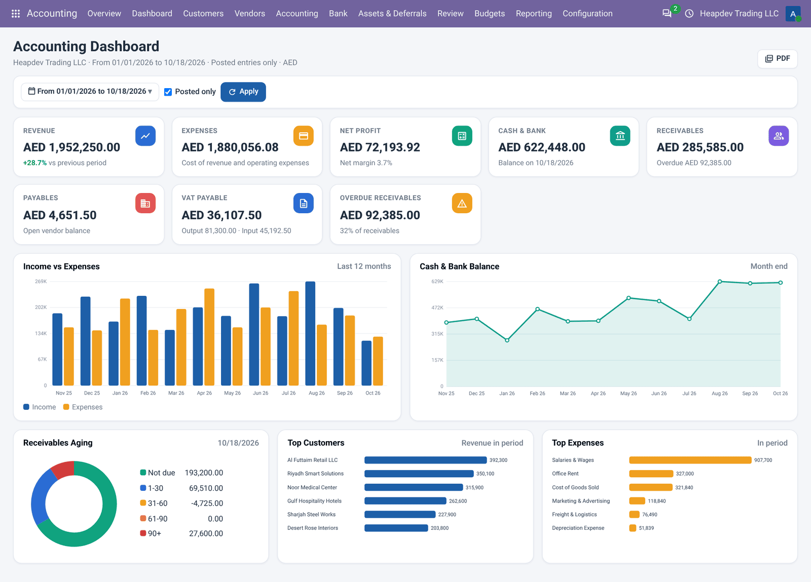
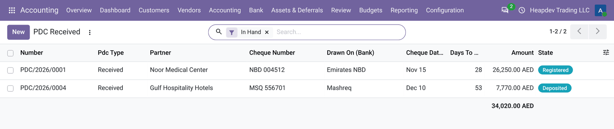
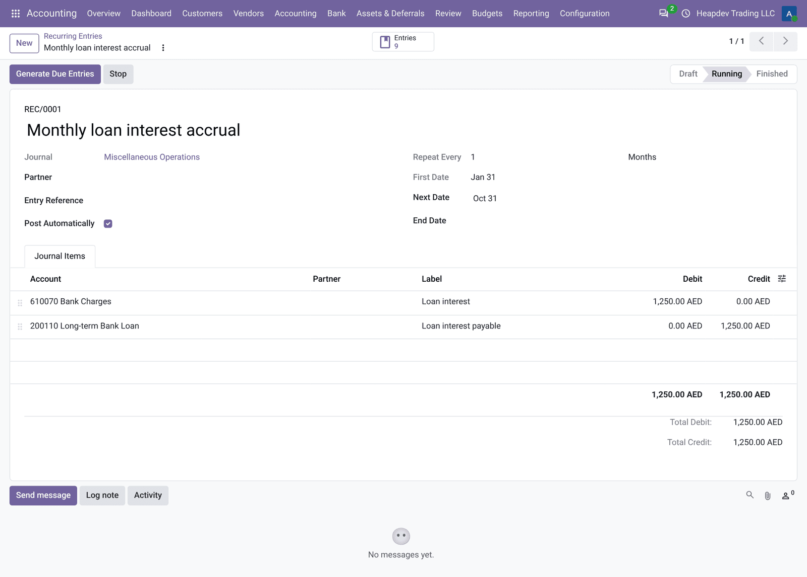
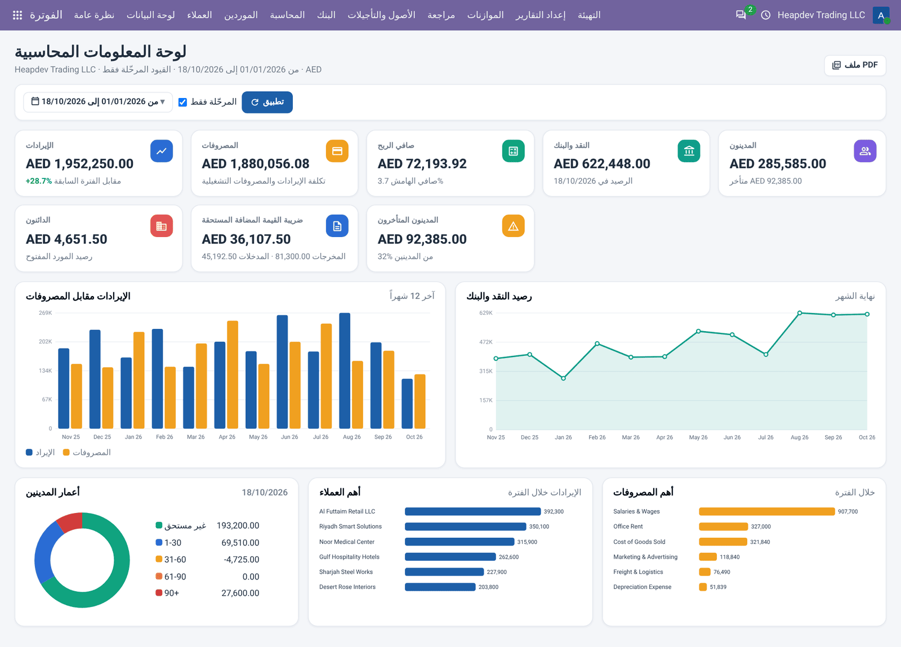

DASHBOARD · FULL MENUS · RECURRING · LOCK DATES · PDC
Accounting Tools: Dashboard, Recurring, Lock Dates, PDC
Full accounting menus, KPI dashboard, recurring entries, lock dates and PDC.
أدوات المحاسبة
قوائم المحاسبة الكاملة ولوحة المؤشرات والقيود المتكررة وتواريخ الإقفال والشيكات المؤجلة.
Full accounting
Journal items, entries and configuration menus for accounting managers.
Dashboard
KPI cards and charts that open the right report in one click.
Daily tools
Recurring entries, lock dates and a complete PDC workflow.
What it does
ماذا يفعل التطبيق
Accounting Tools completes Odoo Community accounting. It unlocks the full accounting menus for accounting managers, adds an Overview dashboard with KPI cards and charts, recurring journal entries generated automatically without date drift, a single screen for all lock dates of your Odoo version, and a post dated cheques register for received and issued cheques with register, deposit, clear and bounce steps.
يكمل تطبيق أدوات المحاسبة محاسبة نسخة المجتمع. يفتح قوائم المحاسبة الكاملة لمديري المحاسبة، ويضيف لوحة معلومات بنظرة عامة مع بطاقات المؤشرات والرسوم البيانية، وقيود يومية متكررة تُنشأ تلقائياً دون انحراف في التواريخ، وشاشة واحدة لكل تواريخ الإقفال، وسجلاً للشيكات المؤجلة الواردة والصادرة مع خطوات التسجيل والإيداع والتحصيل والارتداد.
Highlights
أبرز الميزات
| ✓Full accounting menus | قوائم المحاسبة الكاملة |
| ✓Accounting dashboard | لوحة المعلومات المحاسبية |
| ✓Recurring entries | القيود المتكررة |
| ✓Lock dates | تواريخ الإقفال |
| ✓Post dated cheques (PDC) | الشيكات المؤجلة |
How to use
طريقة الاستخدام
1STEP 1 · OVERVIEW
Accounting > Overview shows the KPI dashboard; click a card to open the report.
المحاسبة > نظرة عامة تعرض لوحة المؤشرات؛ انقر البطاقة لفتح التقرير.
2STEP 2 · AUTOMATE
Create recurring entries and start them; the daily scheduled action generates the entries.
أنشئ القيود المتكررة وابدأها؛ ينشئ الإجراء اليومي القيود.
3STEP 3 · CONTROL
Set lock dates and manage PDC from Accounting > Customers / Vendors.
حدد تواريخ الإقفال وأدر الشيكات المؤجلة من المحاسبة > العملاء / الموردون.
📷 Want to see it? Open the Screenshots tab above for 7 real screenshots.
افتح تبويب لقطات الشاشة في الأعلى لمشاهدة 7 لقطة حقيقية.
Features in detail
الميزات بالتفصيل
Full accounting menus
Unlocks the hidden accounting features of Community for accounting managers: journal items, journal entries, chart of accounts, reconciliation and configuration menus.
قوائم المحاسبة الكاملة
يفتح ميزات المحاسبة المخفية في نسخة المجتمع لمديري المحاسبة: بنود اليومية والقيود ودليل الحسابات والتسوية وقوائم الإعدادات.
Accounting dashboard
KPI cards (revenue, expenses, net profit, cash and bank, receivables, payables, VAT), income vs expenses chart, cash trend, receivables aging donut, top customers and top expenses. Every card opens the matching report.
لوحة المعلومات المحاسبية
بطاقات مؤشرات (الإيرادات والمصروفات وصافي الربح والنقد والبنك والمدينون والدائنون والضريبة) ورسم الإيرادات مقابل المصروفات واتجاه النقد ودائرة أعمار المدينين وأهم العملاء والمصروفات. كل بطاقة تفتح التقرير المطابق.
Recurring entries
Monthly accruals, rent, management fees or prepaid amortisation generated automatically every day, week, month or year, posted or left in draft, without date drift.
القيود المتكررة
المستحقات الشهرية والإيجار ورسوم الإدارة أو إطفاء المدفوعات المقدمة تُنشأ تلقائياً كل يوم أو أسبوع أو شهر أو سنة، مرحّلة أو كمسودة، دون انحراف في التواريخ.
Lock dates
One screen for all lock dates of your Odoo version (period, fiscal year, tax, sales, purchases, hard lock) with a count of draft entries that would be locked.
تواريخ الإقفال
شاشة واحدة لكل تواريخ الإقفال في إصدار أودو لديك (الفترة والسنة المالية والضريبة والمبيعات والمشتريات والإقفال النهائي) مع عدد القيود المسودة التي سيتم إقفالها.
Post dated cheques (PDC)
Received and issued cheques with register, deposit, clear and bounce steps, PDC receivable / payable accounts, automatic reconciliation with the invoices and re-opening on bounce.
الشيكات المؤجلة
الشيكات الواردة والصادرة مع خطوات التسجيل والإيداع والتحصيل والارتداد وحسابات الشيكات المؤجلة وتسوية تلقائية مع الفواتير وإعادة فتحها عند الارتداد.
Screenshots
لقطات الشاشة
Real screenshots from a demo company with the UAE chart of accounts.
لقطات حقيقية من شركة تجريبية بدليل حسابات الإمارات.
1Accounting dashboard with KPI cards, income vs expenses, cash trend and receivables aging
لوحة المعلومات المحاسبية مع بطاقات المؤشرات والإيرادات مقابل المصروفات واتجاه النقد وأعمار المدينين

2Post dated cheques register
سجل الشيكات المؤجلة

3PDC with register, deposit, clear and bounce workflow
شيك مؤجل مع خطوات التسجيل والإيداع والتحصيل والارتداد

4Recurring journal entry with generated entries
قيد يومية متكرر مع القيود المنشأة

5All lock dates on one screen
كل تواريخ الإقفال في شاشة واحدة

6Full accounting menus unlocked in Community
قوائم المحاسبة الكاملة مفعّلة في نسخة المجتمع

7Arabic interface: accounting dashboard
الواجهة العربية: لوحة المعلومات المحاسبية

Frequently asked questions
الأسئلة الشائعة
Is it really free?
Yes. This app is free and licensed LGPL-3.
هل هو مجاني فعلاً؟
نعم، هذا التطبيق مجاني ومرخص LGPL-3.
Does it replace Odoo Enterprise accounting?
It covers the most used Enterprise accounting reports and tools for Community users. It does not include bank synchronisation, OCR or consolidation.
هل يغني عن محاسبة إنتربرايز؟
يغطي أكثر تقارير وأدوات محاسبة إنتربرايز استخداماً لمستخدمي المجتمع، ولا يشمل مزامنة البنوك أو التعرف الضوئي أو التوحيد.
Does it change my existing entries?
No. Reports read the posted journal items; assets, PDC and recurring entries create normal journal entries you can review.
هل يغير قيودي الحالية؟
لا. التقارير تقرأ بنود اليومية المرحّلة، والأصول والشيكات والقيود المتكررة تنشئ قيوداً عادية يمكن مراجعتها.
Which languages are included?
English and a complete Arabic translation; PDFs are printed in English and Arabic side by side.
ما اللغات المضمنة؟
الإنجليزية وترجمة عربية كاملة، وتُطبع ملفات PDF بالإنجليزية والعربية جنباً إلى جنب.
Is it multi-company?
Yes, every report and record follows the current company.
هل يدعم الشركات المتعددة؟
نعم، كل تقرير وسجل يتبع الشركة الحالية.
Requirements
المتطلبات
Depends only on account and mail. Works on Community and Enterprise databases; no extra Python packages.
يعتمد فقط على تطبيقي المحاسبة والمراسلات. يعمل على قواعد بيانات المجتمع وإنتربرايز دون حزم بايثون إضافية.
Support | الدعم
Free app by Adil Akbar. For questions, customisation or implementation support contact adilak389@gmail.com.
تطبيق مجاني من عادل أكبر. للاستفسارات أو التخصيص أو دعم التنفيذ تواصل عبر البريد adilak389@gmail.com.